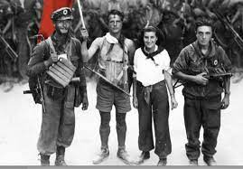
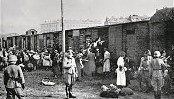
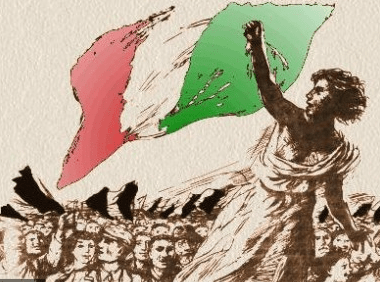

“Bella ciao”: la Resistenza italiana al Nord
 Dopo i numerosi scioperi nelle fabbriche in Piemonte e in Lombardia, a quasi un mese esatto dagli avvenimenti dell’8 settembre, il 5 ottobre «l’Unità» titolava: «Guerra contro l’aggressione nazista. Guerra civile contro i fascisti suoi alleati; lotta politica contro le forze reazionarie». Da quel momento in poi, la resistenza passiva si armò di pistole e fucili con l’ampio sostegno della grande maggioranza della popolazione che, da lì in poi, diede ai partigiani la sicurezza di potersi muovere sul territorio con pochi rischi di essere denunciati. Perché solo con l'appoggio della popolazione civile i resistenti potevano muoversi, nascondersi e trovare supporto nelle regioni occupate dai nazifascisti.
Ad ingrossare le fila delle truppe partigiane c’erano combattenti di diverso orientamento politico. Dalle figure carismatiche dell'antifascismo ad ex militari pentiti di aver servito l’esercito; da giovani ragazzi a donne di tutte le classi sociali. Non un vero e proprio esercito regolare, benché strutturato in divisioni e comandi, ma più che altro una realtà combattente in cui era fondamentale il rapporto con il territorio, che fossero le montagne o le strade e le fabbriche delle città.
Le maggiori associazioni di combattenti partigiani ebbero come nomi quello delle brigate: “Garibaldi", "Matteotti", “Mazzini”, ma anche "Giustizia e Libertà”, "Gruppi di Azione Patriottica” (GAP), “Squadre di Azione patriottica” (SAP), “Gruppi di Difesa della Donna” (GDD) e il “Fronte della Gioventù” (FdG). Si muovevano e agivano soprattutto lontano dai centri abitati, con attacchi improvvisi ai reparti tedeschi, azioni di sabotaggio e disturbo, ma anche con dei veri e propri attentati contro militari tedeschi o della Repubblica di Salò.
Ecco perché, sin dall’inizio, la Resistenza fu anche guerra civile, perché fu combattuta anche tra italiani di diversi schieramenti politici. Spietate, in tal senso, furono le rappresaglie, soprattutto quella delle Fosse Ardeatine dove morirono 335 italiani, in una proporzione di 10 a 1 dopo la morte di 33 militari tedeschi. A Roma, le SS di Herbert Kappler fucileranno 335 ostaggi, prelevati dal carcere di Via Tasso e da Regina Coeli, massacrati all'interno di alcune cave di pozzolana sulla via Ardeatina.

Intanto i nazifascisti avevano avviato le deportazioni in massa degli ebrei, come quella del Ghetto di Roma il 16 ottobre 1943, quando più di mille persone furono rastrellate. Solo sedici di loro torneranno dai campi di concentramento.
Dopo venti mesi di dura resistenza, sul finire di aprile del 1945, cominciò la ritirata da parte dei soldati della Germania nazista e di quelli fascisti della repubblica di Salò dalle città di Torino e di Milano, dopo che la popolazione si era ribellata e i partigiani avevano organizzato un piano coordinato per riprendere le città ben prima dell’arrivo delle truppe angloamericane che avanzavano da Sud.
 Nel frattempo, la fuga di Mussolini da Milano fu ingloriosa come quella del re a Pescara. La sua cattura — mentre cercava di rifugiarsi in Svizzera — e la successiva fucilazione a Dongo suggelleranno la fine della guerra di Liberazione propriamente detta.
Venti mesi, quindi: quelli la cui spinta e anche il cui ricordo non saranno pienamente realizzati negli anni a venire, con il rammarico di molti combattenti di allora. Ma ne resta, oltre alla prima e probabilmente unica presa di coscienza del popolo italiano contro una lunga dittatura, una guerra perduta e una conseguente occupazione sanguinosa, l'eredità di quel senso di comunità e di bene comune che sarà trasferito poi nella Carta Costituente.